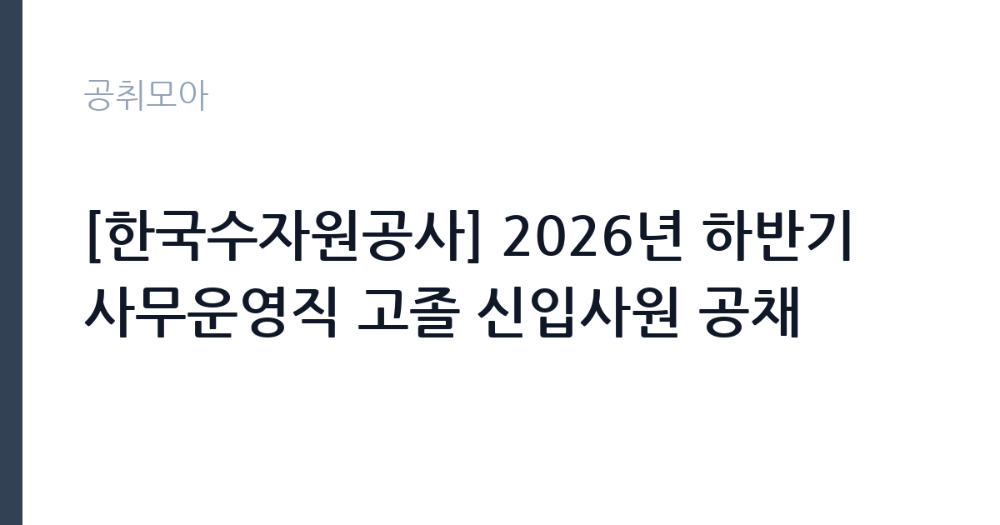

[공공기관] [한국수자원공사] 2026년 하반기 사무운영직 고졸 신입사원 공채
한국수자원공사 · 부산 · 마감 2026-10-07 (D-11) · 출처 잡알리오

한눈에 보는 모집 조건
| 기관 | 한국수자원공사 |
|---|---|
| 공고명 | [한국수자원공사] 2026년 하반기 사무운영직 고졸 신입사원 공채 |
| 고용형태 | 정규직 |
| 근무지 | 부산 |
| 게시일 | 2026-09-23 |
| 마감일 | 2026-10-07 (D-11) |
지원자격, 이렇게 읽으세요
- 공공기관 채용공시
- 세부 조건은 원문 공고문 확인
최종 학력이 고등학교를 졸업하였거나 2027년 2월 졸업예정인 분이 지원하실 수 있습니다. 공고 마감일 기준으로 정년인 만 60세 이상인 경우에는 지원하실 수 없습니다. 공사 인사규정의 채용 결격사유에 해당하지 않으셔야 하며, 병역 미필자도 2026년 11월 29일까지 전역예정자로서 전형 절차에 응시하실 수 있는 경우에는 지원하실 수 있습니다. 입사일인 2026년 11월 30일부터 현업에서 전일 근무가 가능하셔야 합니다. 보훈 분야는 국가유공자 등 예우 관련 법률에서 정한 취업지원 대상자, 장애 분야는 장애인고용촉진 관련 법령에 따른 장애인이어야 합니다. 일반 분야와 사회형평 분야의 선발 인원 배분은 원문 공고문에서 확인하시기 바랍니다.
이 공고의 포인트
이 공고의 가치는 세 가지입니다. 첫째, 고졸 학력만을 요건으로 하는 사무직 정규직 채용이라는 점입니다. 대졸 공채와 분리된 트랙이라 고졸 지원자끼리 경쟁하십니다. 둘째, 10명이라는 규모가 고졸 사무직 단일 공고로는 적지 않은 수준이라는 점입니다. 셋째, 근무지가 전국 12개 권역으로 넓어 지역 연고에 맞추어 지원하실 수 있다는 점입니다. 전형이 필기와 면접으로 비교적 단순하며, 보훈과 장애 분야 지원자는 필기시험이 면제되어 서류와 면접으로 진행됩니다.
전형은 어떻게 진행되나
전형은 1차 필기전형과 2차 면접전형으로 진행됩니다. 다만 보훈 분야와 장애 분야 지원자는 필기시험 없이 전형이 진행됩니다. 필기전형에서는 사무운영 직무에 필요한 기초 능력과 직무 지식을 평가하므로, 국가직무능력표준 기반의 출제 경향을 미리 파악해 두시기 바랍니다. 2차 면접전형에서는 직무수행능력과 조직적합도를 평가합니다. 이후 지원자격 적부심사를 거쳐 최종합격자가 결정되며, 입사일은 2026년 11월 30일입니다. 수습 기간과 해제 조건은 원문 공고문에서 확인하시기 바랍니다.
원문에서 확인한 전형 방식
1. 최종 학력이 고등학교를 졸업하였거나, 졸업예정('27. 2월)인 자 (단, 공고 마감일 기준 정년(만 60세) 이상인 자는 지원 불가) * 보다 자세한 사항은 첨부파일의 채용공고문을 참조 2. K-water 인사규정의 채용 결격사유에 해당하지 않는 자 (병역 미필자 및 '26.11.29.까지 전역예정자로서 전형절차에 응시 가능한 경우 지원 가능) 3. 입사일('26.11.30.)부터 현업 전일근무 가능자 4. (보훈 분야) 「국가유공자 등 예우 및 지원에 관한 법률」등 관련 법률에서 정한 취업지원 대상자 5. (장애 분야) 「장애인고용촉진 및 직업재활법 시행령」에 따른 장애인
이런 분께 추천해요
- 2027년 2월 고등학교 졸업예정자로 공기업 입사를 준비하시는 분께 적합합니다. 졸업예정자도 지원하실 수 있기 때문입니다.
- 대졸 공채가 아닌 고졸 전형으로 안정적인 사무직을 찾으시는 분께 적합합니다. 학력 트랙이 분리되어 있기 때문입니다.
- 보훈 또는 장애 분야 자격을 갖춘 고졸 지원자에게 적합합니다. 필기시험이 면제되는 전형이기 때문입니다.
지원 전 체크리스트
- 최종 학력이 고등학교 졸업 또는 2027년 2월 졸업예정에 해당하십니까.
- 2026년 11월 30일 입사 후 현업 전일 근무가 가능하십니까. 재학 중이시면 졸업 시기를 확인하십시오.
- 보훈·장애 분야 지원자는 관련 법률에 따른 증빙서류를 준비하셨습니까.
- 필기전형 출제 범위와 면접 일정을 원문 공고문에서 확인하고 준비 계획을 세우셨습니까.
모집 일정과 제출 타이밍
지원서 접수 마감은 2026년 10월 7일입니다. 접수 마감일에는 접속이 몰릴 수 있으므로 가급적 마감 2일 전까지 제출을 마치시는 편이 안전합니다. 이후 1차 필기전형과 2차 면접전형을 거쳐 2026년 11월 30일에 입사하시는 일정입니다. 필기전형이 있는 일반 분야 지원자는 접수 기간부터 기초 능력 영역을 정리해 두시고, 면접에서는 사무운영 직무에 대한 이해를 보여주실 수 있도록 공사의 사업 방향을 미리 살펴보시기 바랍니다.
직무 이해하기: 공공기관
사무운영직은 공사의 본사와 지역 지사, 수도사업소 등에서 행정 실무를 담당하는 직무입니다. 문서 관리와 민원 응대, 사업 지원과 현장 행정 업무가 중심이 됩니다. 한국수자원공사는 광역상수도와 댐·보 운영, 수변도시 조성과 물산업 육성 등 전국 단위 사업을 수행하고 있어 운영직의 현장 행정 역할이 중요합니다. 고졸 신입으로 입사하시면 일선 사업소에서 실무를 익히며 경력을 쌓으시게 되며, 이후 직무 교육과 순환근무를 통해 역량을 넓히실 수 있습니다.
자기소개서 작성 팁
자기소개서에서는 사무운영 직무를 선택한 동기와 본인의 성실성을 보여줄 수 있는 경험을 중심으로 작성하시기 바랍니다. 학교생활이나 아르바이트, 자격증 취득 과정에서 문서 작성과 정리, 대인 응대 경험을 구체적으로 제시하시면 됩니다. 공사의 물관리 사업과 지역사회 기여에 대한 관심을 본인의 경험과 연결하여 서술하시면 좋은 평가를 받으실 수 있습니다. 졸업예정자는 졸업 후 입사까지의 계획을 분명히 밝히시는 편이 좋습니다.
면접 준비 포인트
면접에서는 사무운영 직무에 대한 이해도와 성실성, 조직적합도가 핵심 평가 요소입니다. 공사의 주요 사업과 사무운영직의 역할을 본인의 언어로 설명하실 수 있도록 준비하시기 바랍니다. 민원 응대나 팀 협업 상황을 가정한 질문에는 구체적인 경험을 들어 답변하시면 됩니다. 전국 12개 권역 근무에 대한 의지와 입사 후 포부를 명확히 밝히시는 편이 좋습니다. 고졸 전형의 특성상 배우려는 자세와 장기근속 의지를 보여주시는 것이 중요합니다.
급여·근무조건 읽는 법
이 공고의 보수 조건은 원문 공고문에서 확인하셔야 하며, 이 글에서 확정 수치를 단정하지 않습니다. 참고로 외부 취업정보 기준으로는 한국수자원공사의 대졸초임이 7,044만원 수준으로 안내되어 있으나, 이는 대졸 기준의 외부 참고치이므로 고졸 운영직 초임에 그대로 적용하지 마시기 바랍니다. 고졸 운영직의 실제 초임은 원문 공고문의 근로조건에서 확인하시고, 기본급과 수당·상여의 구성은 공단 경영공시 자료와 함께 살펴보시기 바랍니다.
자주 묻는 질문
- 대학에 진학 예정이어도 지원할 수 있습니까.
지원자격은 최종 학력이 고등학교 졸업 또는 2027년 2월 졸업예정인 분입니다. 대학 진학 계획이 있으시면 입사일인 2026년 11월 30일부터 전일 근무가 가능한지 먼저 확인하시기 바랍니다. - 보훈·장애 분야도 필기시험을 봅니까.
보훈 분야와 장애 분야 지원자는 필기시험 없이 전형이 진행됩니다. 일반 분야 지원자는 1차 필기전형에 응시하셔야 합니다. - 근무지역을 선택할 수 있습니까.
근무지역은 부산·대구·인천·대전을 포함한 전국 12개 권역으로 안내되어 있습니다. 권역별 배치 방식은 원문 공고문에서 확인하시기 바랍니다.
함께 보면 좋은 공고
[공공기관] [속리산] 속리산국립공원사무소 기간제(탐방해설) 직원 채용 재공고 — 마감 2026-10-08[공공기관] 발전공기업 통합실무지원단장 채용공고 — 마감 2026-10-08[공공기관] [설악산] 설악산국립공원 기간제 직원[환경관리(한시인력)] 채용 공고 — 마감 2026-10-01출처: 잡알리오 공개정보를 바탕으로 공취모아가 정리한 안내글입니다. 모집 조건·일정은 변경될 수 있으니 지원 전 반드시 원문 공고문을 확인하세요. 본 글은 정보 제공용이며 합격을 보장하지 않습니다.